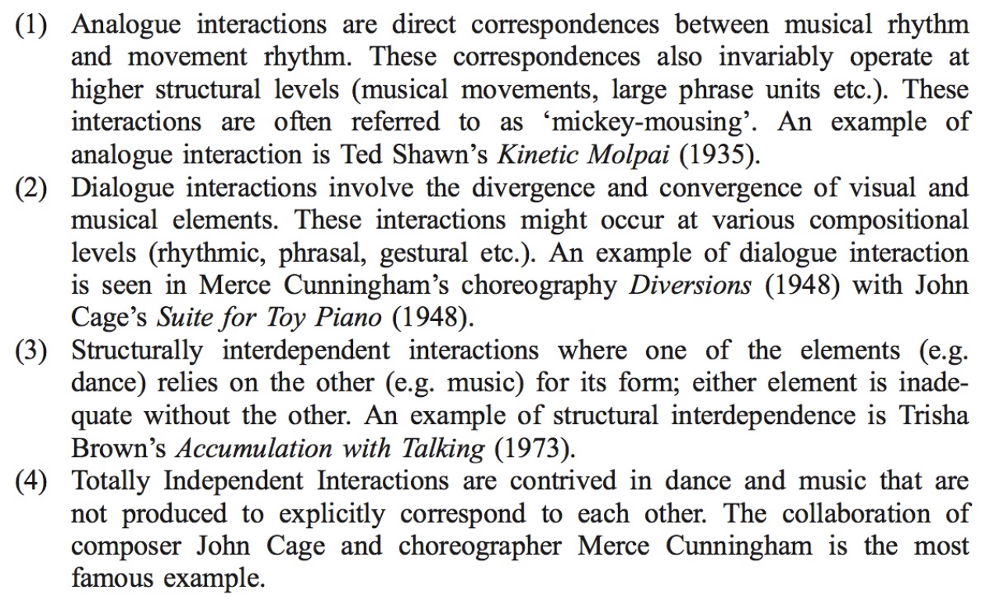
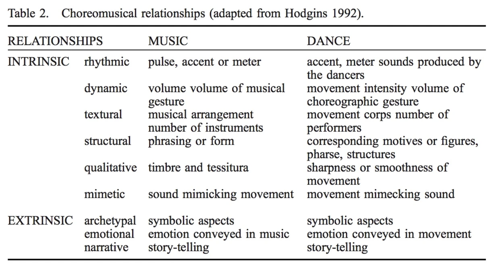

Recently, I’ve been thinking about how musicians and dancers share performance spaces, and the environment that they create together. This obsession lead me to stumbled upon a new word during a google binge: choreomusicology. Researchers Stephanie Jordan, Inger Damsholt, and Paul Mason define choreomusicology as the study of the relationship between music and dance within any performance genre, and they offer a much-needed critical evaluation of an otherwise elusive relationship. Several papers have been published on this topic (find them here), so I’ll try to summarize their research without going too much into detail. Afterwards, I’ll present my own opinions and propose further directions of research.
In Mason’s 2011 paper, “Music, dance and the total art work: choreomusicology in theory and practice”, he briefly discusses the history of choreomusicological as both a subject of research and and as a practice. Centering on mostly Euro-centric performance practices, he reviews the research of dance anthropologists, art historians, evolutionary theorists, and music and theatre critics. He also includes an overview of the Gesamtkunstwerk movement (starting with Kandinsky, Lopukhov, Balanchine/Stravinsky), and twentieth century performance practices (Ted Shawn, Ruth St. Denis, Martha Graham, Doris Humphrey, Louis Horst, and Henry Cowell).
Mason summarizes twentieth century theoretical formalization in choreomusicology through the work of McCombe (1994), Smith (1981), and Hodgins (1992). Smith proposes four non-exclusive types of dance/music interactions along continuum. I’ve copied these categories below:

In Hodgin’s book Relationships between score and choreography in twentieth century dance, he categorizes choreographic relationships into two labels: intrinsic and extrinsic. Intrinsic relationships emerge from structures and elements embedded in the music and movement (rhythm, loudness, texture, phrase, mimetic movement), while extrinsic ones arise from contextual cues and cultural associations (archetypal, emotional, narrativic).

Though choreomusicological research offers numerous proposals to formalize music/dance relationships, it currently ignores the question of embodied musical performance, that is, not only questioning the relationship between the performance material, but also the psychological aspects of the performers themselves given the inherent differences in their respective art forms. When speaking about the integration of music and dance, it is necessary to address the differences of media: live music (played by musicians) occupies both sonic and visual media, whereas dance only occupies the visual medium. In other words, traditional Western classical music performance practice has not addressed an important fundamental aspect of dance: the notion of performers as physical bodies.
Until recently, classical musician’s appearances were highly regulated in effort not to distract from the sonic medium. Put on formalwear, enter the stage, take a bow, put your music on the stand, play, finish, accept the applause, bow again, and exit the stage. Usually, this is still standard practice. In more contemporary situations, some performers have diversified their wardrobes, stylized their stage movements, and have been performing pieces requiring non-strictly-musical movement. However, by and large, the musicians are still interacting with sheet music in a non-stylized way. Therefore, their communication with the audience is always mediated through their reaction with sheet music. Even the language employed in literature supports this mediation. Hodgin titled his book Relationships between score and choreography in twentieth century dance, and not …between sound and choreography…. The word 'score' implies representation and abstraction. During performance, the audience sees a performer interact with a representation of the performance, and the score is the mediator between the performer, the material, and the audience.
On the other hand, dancers, for the most part, do not read during a performance. They might study and memorize notated choreography or video documentation, but during the performance, there is nothing physically separating them from the audience, and the material appears to be embodied. Therefore, there is visually no mediation between the dancer, the material, and the audience. The dancer becomes the material.
Originally, I was going to label this a "difference in cerebral performance state”. Thankfully, long-time friend/colleague suggested the term “performative attention”, which sounds infinitely less terrible. Thus, I propose that score-reading musicians display mediated performative attention while dancers display unmediated performative attention. That is, the musician’s musical focus appears to be mediated through the score, while a dancer’s focus on the choreography seems totally embodied.
When composers and choreographers produce interdisciplinary performances that incorporate dancers and musicians, they must acknowledge that the juxtaposition of dancers and musicians makes the differences in their respective performative attention evident. Of course, one's approach to this question depends on the nature of the performance itself. If the musicians are hidden from public view (such as a pit orchestra), this is non-issue. However, if the performers share a stage, this problem becomes intertwined with the intended style of integration of the music and dance.
For instance, if the performers share the stage and are visible to the public, a 'rest' in music is not the same as a 'pause' in dance. A rest lets the musician exit the audible medium, though they are still present in the visual medium (unless, of course, they leave the stage). Most musicians do not stylize their rests. They might exhale in relief after finishing a difficult passage, rest their arms, readjust their instrument, etc. These actions briefly break the consistency of focus in the visual medium. That is to say, it breaks the fourth wall, and the audience becomes aware of the shift of performative attention.
On the other hand, when a dancer pauses on stage, or approaches a pose of relative relaxation, they do not exit their medium. Their bodies are still present in the performance space, and their pauses are stylized. It is virtually impossible for a dancer to exit their medium on stage without performative attention, that is, unless this shift of attention is choreographed into the piece.
This being said, the manner of addressing performative attention changes depending on the intended relationship between the music and the dance, and how the collaborators intend to direct the focus of the performers. If the dance simply accompanies prewritten music, and the music does not address the musician’s bodies as performative entities, then I propose that no change is needed. However, if the collaborators intend to create an interactive feedback loop between the musician(s) and dancer(s) (as is desired in my own work), and a they want the performers to exist in a non-hierarchical system (one medium doesn't exist to solely serve the other, or vice versa), then the performers must have equivalent or stylized performative attention. My preference is that they share unmediated performative attention. Any communicative abstraction of the performance (that being the score and/or written choreography) should totally embodied/memorized, there should be no sheet music on the stage (unless used as a prop). There should be no apparent mediation between the performers and each other, nor between the performers and the audience. Thus, neither performer is allowed to escape their medium in an unstylized way. I personally believe that this creates the most cohesive and visceral performance space.
Creating this environment poses many challenges which I have addressed in earlier entries. How does one create visual representations of dynamic interdisciplinary interactions within a complex form that can be memorized? How does this change the nature of the audible and visual material? How does this change the process of composition and rehearsal? Is this at all feasible?
The closest I’ve come to this ideal was realizing my recent project ironic erratic erotic, which I’ve written about in detail here and here. To summarize, my goal with this project was to create an environment where the performers share unmediated performative attention within a sequence of dynamic interdisciplinary interactions. They are engaged with the other performers, and not a score.
To be frank, I’m not sure if this ideal performance practice is possible. It requires research into new solutions in flexible music and dance notation, an intense collaborative practice, and finding a balance of material that is structured, flexible, complex, simple, and ultimately compelling.